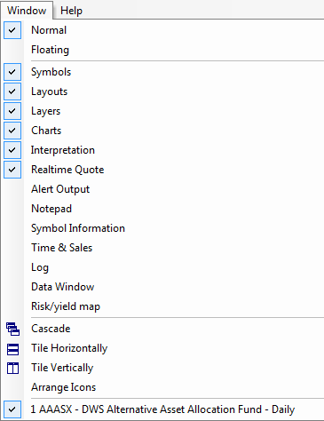

IMPORTANT NOTE for old version users: Window -> New and Window -> New Linked options have been moved to the File->New->Default Chart and File->New->Linked Chart menus.
Symbols tab - symbols tree, with categories (See: Understanding categories).
Layouts tab - list of available global and local layouts. (See: Working with chart sheets and window layouts).
Layers tab - list of chart layers. (See: Working with layers).
Charts tab - the window showing the list of chart formulas (See: Working with drag-drop charting interface).
Interpretation
Displays/hides the Interpretation window.
Real-time Quote
Displays/hides the Real-time Quote window. The real-time quote window provides real-time
streaming quotes and some basic fundamental data. To learn more, read the How
to use AmiBroker in Real Time mode chapter.
Alert Output
Shows/hides the Alert Output window. The window displays texts generated by formula-based alerts. Detailed information on how to use alerts is available in the Using
formula-based alerts part of the User's Guide.
Notepad
Displays/hides the Notepad window, which allows you to store free-text notes about a particular
security. Just type any text, and it will be automatically saved/read back
as you browse through symbols. Notes are global and are saved in the "Notes" subfolder
as ordinary text files.
Symbol Information
Shows the symbol information window with fundamental data.
Time & Sales
Shows Time and Sales real-time window.
Log
Shows the Log window that displays AFL error messages, run-time errors, and _TRACE output.
Data Window
Shows the Data Window that displays values of chart indicators.
Risk/Yield map
Displays a Risk/Yield map of all the symbols in the database. The Risk/Yield map calculates the average weekly return (the yield) and standard deviation of the weekly returns
(the risk) over at least 12 weeks. It requires at least 60 bars' worth of data
for every stock. To zoom in, mark the area with the mouse. To zoom out, simply
click on the map.
Cascade
Cascades open chart windows.
Tile Horizontally
Tiles the open chart windows horizontally.
Tile Vertically
Tiles the open chart windows vertically.
Normal
Switches the chart window to "normal" (non-floating) state. More info here.
Floating
Switches the chart window to floating state.
More info here.
Arrange Icons
Allows you to arrange the minimized windows. The Arrange Icons option works only if: